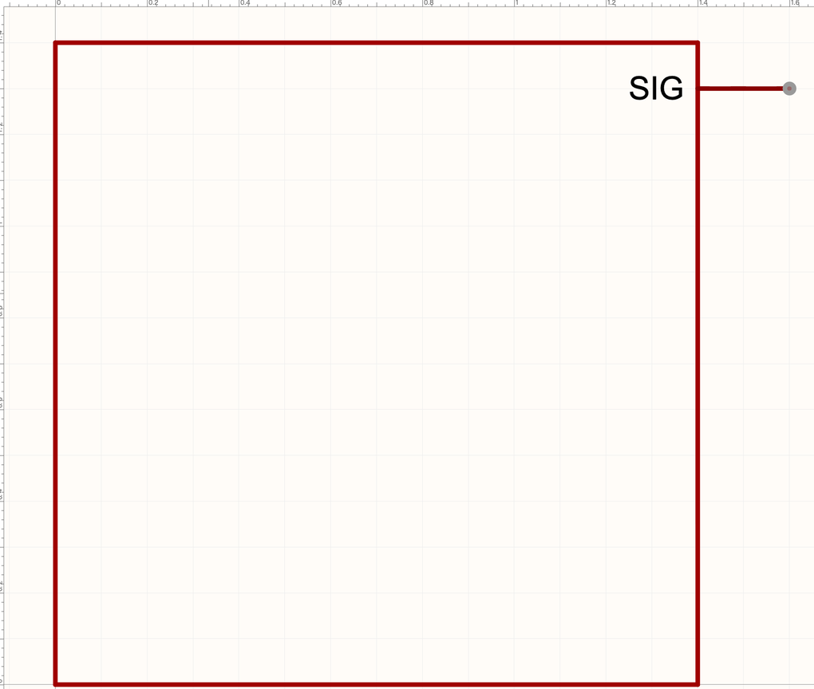
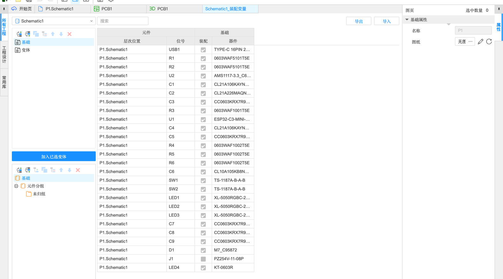

4.4 多页、层次图与装配变量
电路一大，一张图就挤不下了。这一页讲大型设计的三种组织方式：多页原理图、层次图（模块化）、复用模块；再加上装配变量——同一张原理图出好几个版本。
大型设计#
方式一：多页原理图（平铺）#
最简单：一个原理图分成几页（「文件」→「新建」→「图页」，4.1），每页画一个功能模块，页与页之间用网络端口或跨页连接标识连起来（4.2 的实测例子）。所有页是平级的，像一本书的几页。
方式二：层次图（模块化）#
层次图像“俄罗斯套娃”：顶层图上只放几个方框（模块符号），每个方框代表一张子原理图；子原理图里的网络端口自动变成方框上的引脚。好处是顶层图非常清楚，一眼看出系统结构；同一个子模块还能在顶层放好几次（比如 4 路一样的电机驱动）。
- 先画好子原理图，用网络端口标出对外的连接（如电源、SIG）
- 「设计」→「生成/更新模块符号」
- 软件提示“网络端口和复用模块的引脚不同步，是否更新引脚？”→ 点「是」
- 打开一个新标签（符号编辑器），里面就是自动生成的模块符号，网络端口变成了它的引脚

方式三：复用模块#
复用模块是“可以在不同工程之间重复使用的电路块”：比如你画好了一个很满意的“USB 转 3.3V 供电”电路，存成复用模块，以后新工程里直接放进来，连 PCB 布局布线都能一起带过来。
- 保存：「文件」→「另存为」→「另存为复用模块」（3.2）
- 放置：「放置」→「复用模块」，或底部库面板的「复用模块」类型
- 更新：模块改了以后，「设计」→「更新复用模块…」同步到用了它的地方
屏蔽与装配变量#
屏蔽区域、元件屏蔽#
「放置」→「屏蔽区域」画一个框，框里的电路被“屏蔽”——不参与网表、不转到 PCB。适合暂时不用但想留着的电路（比如“备用方案”）。「元件屏蔽」是对单个元件做同样的事。
装配变量：一张图出好几个版本#
真实产品常有“标准版 / 豪华版”：板子一样，只是有些元件焊、有些不焊。装配变量就是做这个的：同一张原理图，定义几个“变体”，每个变体里勾选哪些元件要装。

- 「工具」→「装配变量…」，打开装配变量标签页
- 左上角新建一个变体，比如“不带彩灯”
- 在右边表格里，把 LED1～LED3 的「装配」取消勾选
- 导出 BOM 时可以选按哪个变体导出，不装的元件就不会出现在清单里
- 「视图」→「装配变量视图模式」可以在原理图上看出哪些元件在当前变体里不装